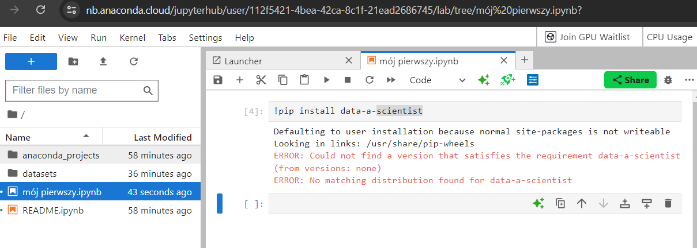
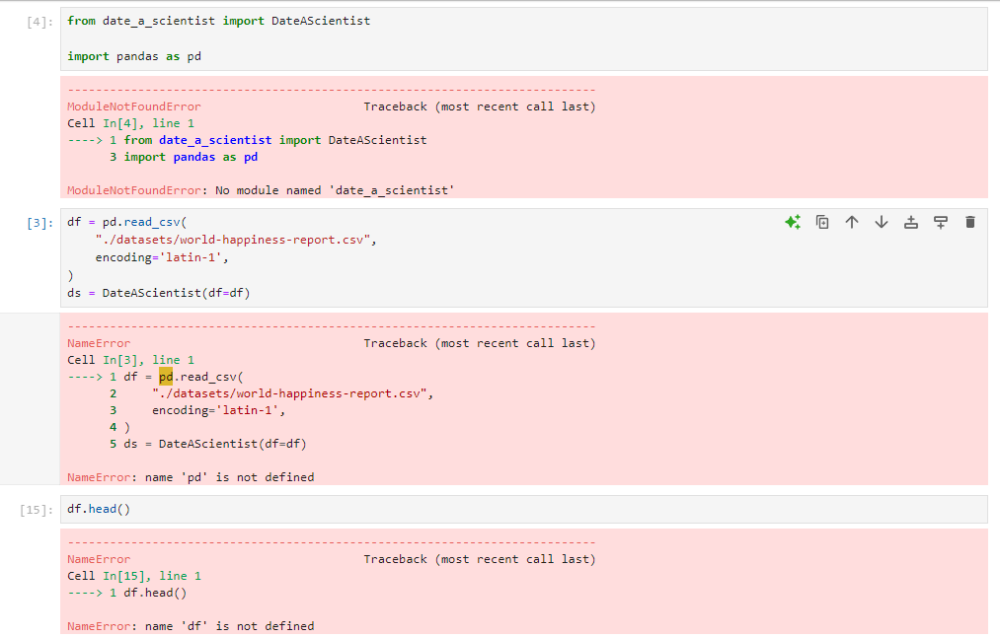
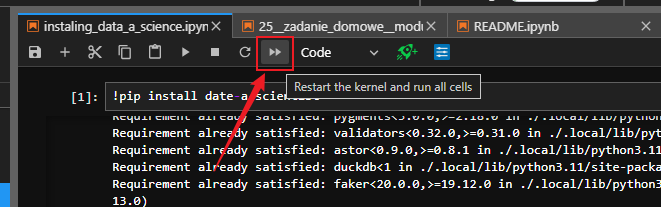
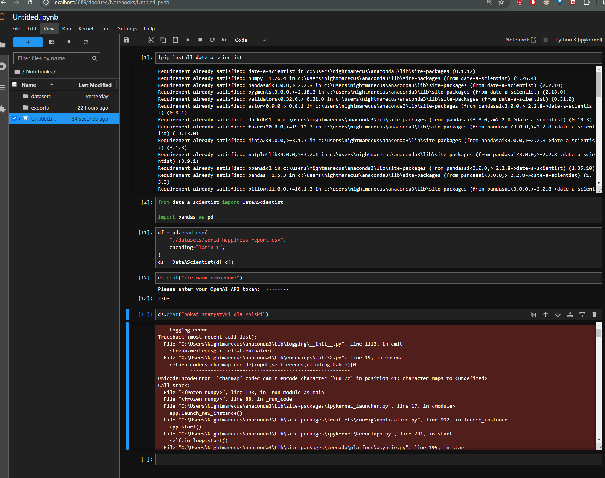
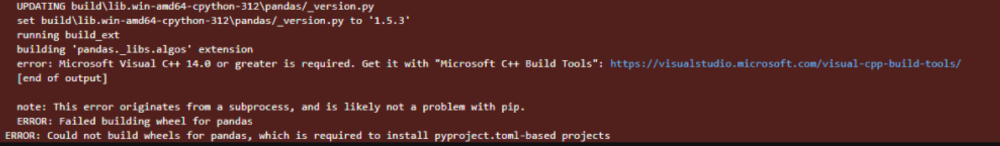
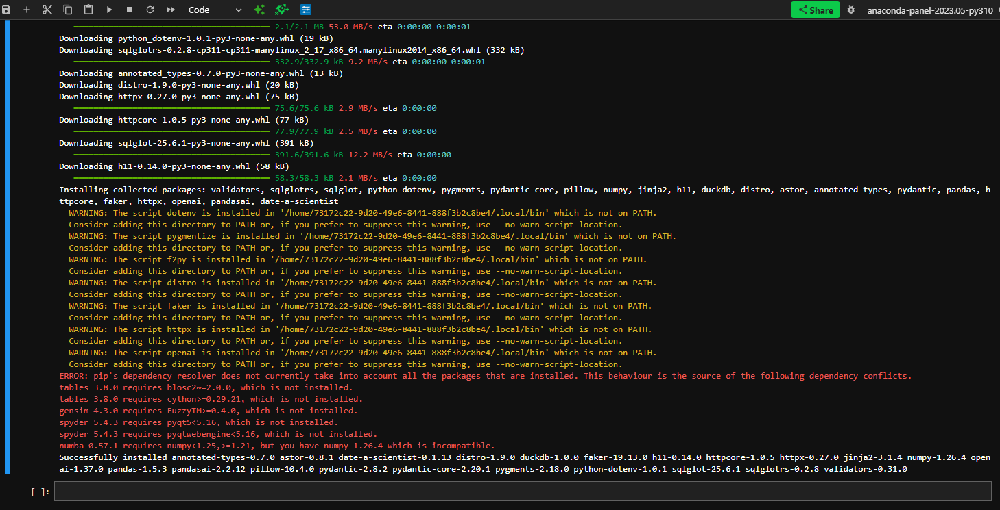
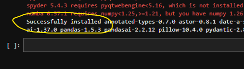
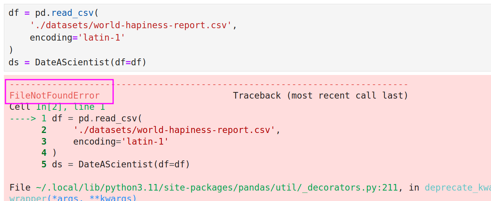

Biblioteka date-a-scientist - instalacja i problemy¶
date-a-scientist to narzędzie, które pozwala zadawać pytania dotyczące danych w formacie Pandas DataFrame bezpośrednio w Jupyter Notebooku, wykorzystując do tego język naturalny. Dzięki niemu możesz analizować i przetwarzać dane w sposób bardziej intuicyjny, formułując zapytania w prostym, zrozumiałym dla Ciebie języku, zamiast pisać skomplikowany kod.
Jak zainstalować bibliotekę date-a-scientist?¶
- Dodaj nową komórkę w jupyter notebook
- wklej i uruchom poniższy kod
!pip install -U date-a-scientist
Widzę błąd ERROR: Could not find a version that satisfies the requirement¶
Sprawdź czy nie masz literówki w nazwie pakietu. Może być tak, że nazwa pakietu jest niepoprawna.
- Poprawna nazwa pakietu to
date-a-scientist(z myślnikiem, a nie podkreślnikiem). - Częstym błędem jest wpisywanie
datazamiastdate.

Po instalacji pakietu date-a-scientist z Anaconda Cloud nie mogę go zaimportować albo notebook go nie widzi¶
Jeśli wszystko wydaje się być w porządku, lecz pojawiają się poniższe błędy:

Spróbuj zrestartować kernel i uruchomić ponownie wszystkie komórki w notebooku Jupyter. Aby to zrobić, kliknij przycisk oznaczony na poniższym obrazku (Restart the kernel and run all cells).

Znajdziesz go w górnej części interfejsu, obok przycisków nawigacyjnych. Po kliknięciu tego przycisku kernel zostanie zrestartowany, a wszystkie komórki w notebooku zostaną uruchomione ponownie.
Widzę błąd UnicodeEncodeError jak wpisuję polskie znaki w date-a-scientist¶

Żeby zaadresować ten problem wykonaj następujące kroki (na Windowsie):
- Otwórz Panel sterowania.
- Przejdź do System i zabezpieczenia > System > Zaawansowane ustawienia systemu.
- Kliknij przycisk Zmienne środowiskowe.
- W sekcji Zmienne systemowe kliknij Nowa.
-
Dodaj zmienną:
- Nazwa zmiennej:
PYTHONIOENCODING - Wartość zmiennej:
utf-8
- Nazwa zmiennej:
-
Dodaj kolejną zmienną:
- Nazwa zmiennej:
PYTHONUTF8 - Wartość zmiennej:
1
- Nazwa zmiennej:
-
Zatwierdź zmiany, klikając OK.
I wówczas zamknij Jupyter Lab i otwórz ponownie
Nie mogę zainstalować pakietu date-a-scientist. Widzę ogromny komunikat o błędzie¶

Jeśli widzisz błąd, w pierwszej kolejności sprawdzaj jego początek i koniec. Tam najczęściej jest najwięcej informacji. W tym przypadku zerknij na koniec komunikatu i zwróć uwagę czy zawiera informację o braku Microsoft Visual C++. Np w komunikacie: error: Microsoft Visual C++ 14.0 is required. Get it with "Microsoft Visual C++ Build Tools": https://visualstudio.microsoft.com/visual-cpp-build-tools/ Jeśli tak, to należy zainstalować Microsoft Visual C++ Build Tools z linku podanego w komunikacie. Ważne jest, aby podczas instalacji zaznaczyć opcję Programowanie aplikacji klasycznych w C++.

W trakcie instalacji pakietu date-a-scientist pojawiają się różne kolorowe komunikaty o ostrzeżeniach i błędach¶

Jeśli zobaczysz całą serię ostrzeżeń i błędów podczas instalacji, nie musisz się martwić, o ile na końcu pojawi się komunikat o pomyślnym zainstalowaniu biblioteki. Dla pewności możesz ponownie uruchomić komórkę z instalacją – to powinno usunąć wszelkie ostrzeżenia.

Zaznaczony fragment świadczy o prawidłowym zainstalowaniu biblioteki.
Widzę błąd FileNotFoundError podczas pracy z date-a-scientist¶
Jeżeli widzisz błąd jak na obrazku poniżej:

Zwróć uwagę na początek komunikatu o błędzie .
Jeśli jest tam informacja o braku pliku (np. FileNotFoundError jak na obrazku) to najprawdopodobniej masz błąd w ścieżce lub plik nie został pobrany we wskazane miejsce.
- Sprawdź czy ścieżki są poprawne np. czy nie ma błędów w nazwach folderów - dużych liter, spacji itp. - domyślnie w kursie używamy folderu datasets
- Sprawdź czy plik istnieje we wskazanej lokalizacji np. czy nie został usunięty, czy nie zmieniła się jego nazwa - często przy ponownym pobraniu plików z kursu zmieniają się ich nazwy na nazwa_pliku(1).csv itp.
- Sprawdź czy plik nie jest uszkodzony - jeśli plik został pobrany niekompletnie, to może być uszkodzony i nie da się go otworzyć
- Sprawdź czy plik ma odpowiednie rozszerzenie - plik CSV powinien mieć rozszerzenie
.csv, plik Excel.xlsx, notebook.ipynb, a plik python.py
Pliki z danymi znajdziesz w sekcji Pliki do pobrania pod filmami na platformie kursu.